A handmade gift carries a kind of weight a store-bought one rarely manages, no matter how carefully chosen. The time spent making it tends to matter more to the recipient than the actual cost of the materials ever does.
None of the ideas below require advanced craft skills to pull off well. Most come down to a handful of accessible materials, a bit of patience, and a little personal detail that makes the final gift feel like it was made with one specific person in mind.

Choosing the Right DIY Gift
The best DIY gift matches both the maker's actual skill level and the recipient's genuine interests, a beautifully hand-lettered card beats a clumsily knitted scarf for someone who doesn't knit well yet. Simple packaging, done consistently, usually elevates a homemade gift more than any single fancy material could.
Why DIY Gifts Feel More Personal
A handmade gift signals real time spent, which is harder to fake than money spent. Even a simple project, a jar of granola, a hand-lettered card, carries an implicit message that the giver thought specifically about the person receiving it, rather than picking something generic off a shelf.
25 DIY Christmas Gift Ideas
1. A Personalized Christmas Card
Never underestimate what a handmade card can do.
Textured paper, a family photograph, ribbon, pressed greenery, or a handwritten message all go into a simple card that feels genuinely considered.
Elaborate decoration isn't necessary to make a handmade card meaningful, the handwriting and the sentiment behind it carry most of the weight.
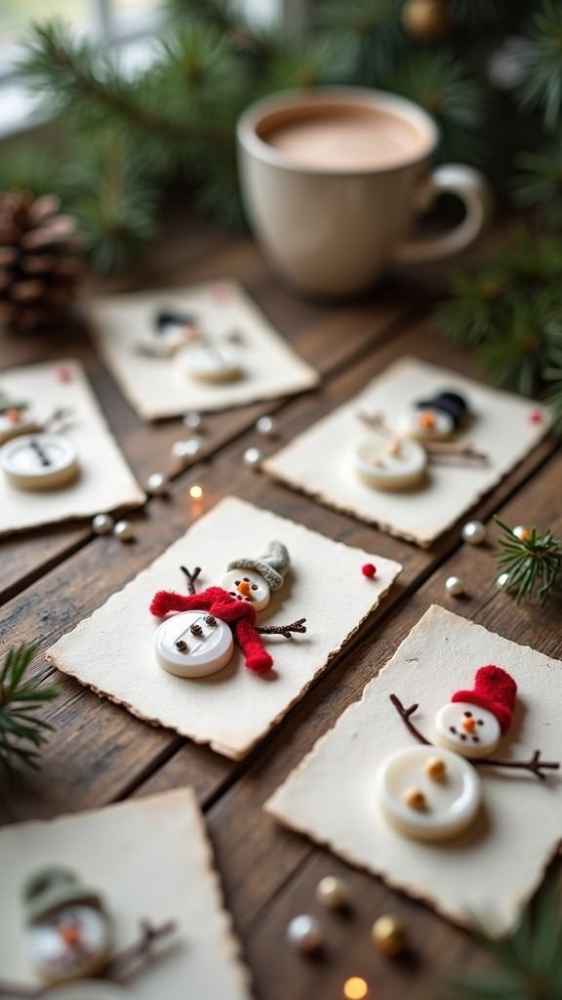
2. DIY Christmas Gift Basket
Sometimes one handmade gift on its own isn't quite enough.
Building a themed basket around something the recipient already loves, a cozy night in, a love of baking, a favorite hobby, ties several smaller gifts into one cohesive present.
Choosing one clear theme and sticking to it is the real trick here; without it, the basket starts looking more like a clearance aisle with a ribbon tied around it.
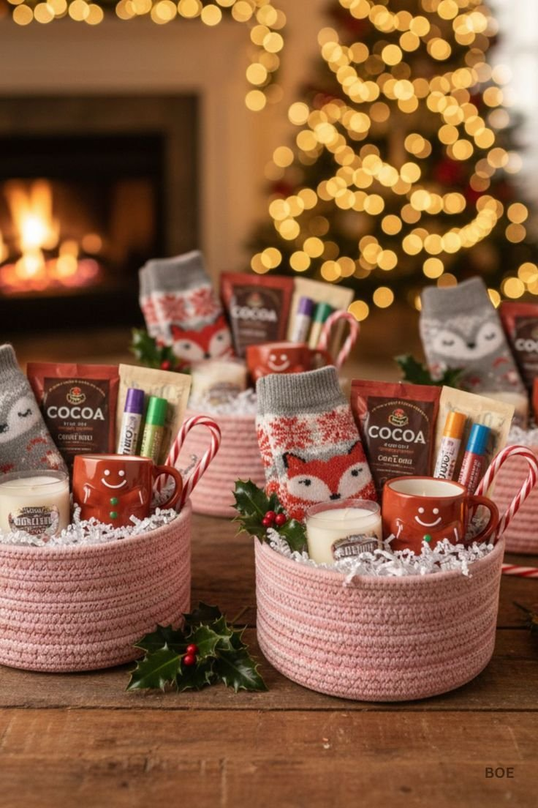
3. Homemade Jam
Homemade jam makes an excellent food gift when packaged with a bit of care.
Strawberry, raspberry, cranberry, orange, or another seasonal flavor, finished with a handwritten label noting the flavor and date, builds a thoughtful, practical gift.
Pairing the jar with crackers, biscuits, or a small loaf of homemade bread rounds it out, following a tested preservation recipe and proper food-safety practices matters more here than with most other gifts on this list.
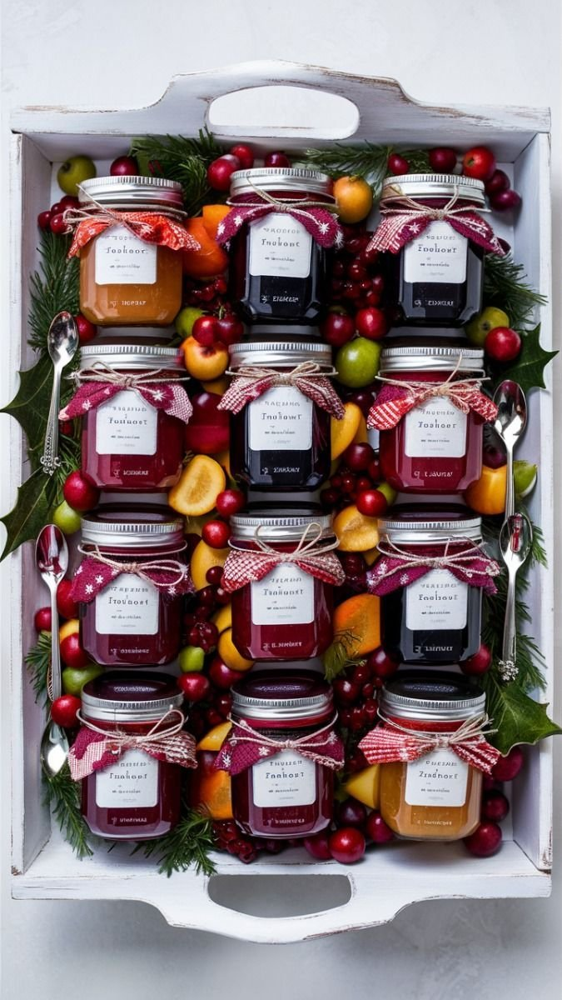
4. Personalized Christmas Stocking
A simple fabric stocking, personalized with the recipient's name, makes a gift that gets reused every single year.
A traditional red and green palette works well, or a more modern direction, cream, burgundy, forest green, dusty pink, suits a different style of home.
Filling the stocking with a few small gifts turns the stocking itself into part of the present.
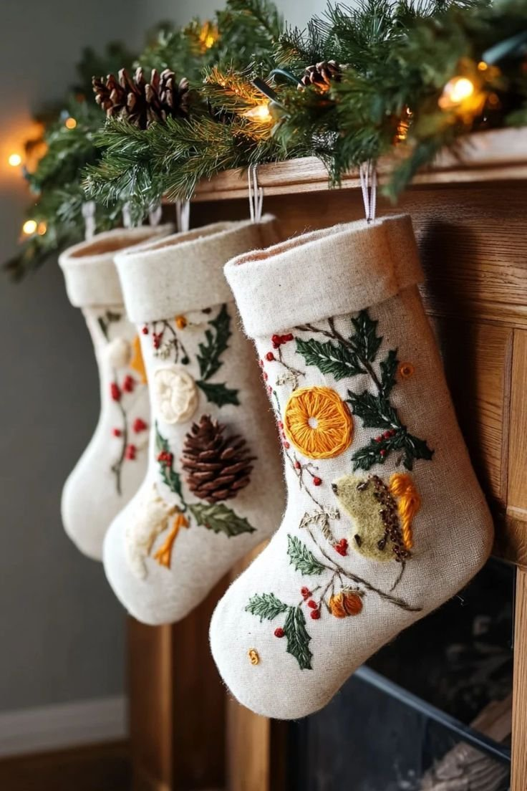
5. Homemade Body Butter
Body butter makes a genuinely beautiful self-care gift.
Using a reliable recipe with ingredients appropriate for cosmetic use, then packaging the finished product in a clean cosmetic jar with a simple label, builds the whole gift.
A subtle scent is the safer choice for anyone whose fragrance preferences aren't well known, a strong scent can easily turn a thoughtful gift into an unwelcome surprise.
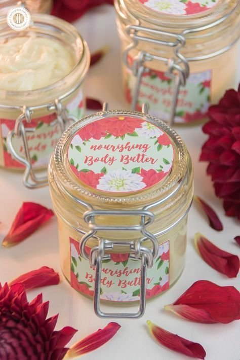
6. Homemade Christmas Tea Box
A personalized tea collection, built from several favorite varieties, makes a thoughtful and genuinely useful gift.
Tea bags placed inside a decorated box, with honey sticks, homemade cookies, cinnamon sticks, or chocolate added alongside, rounds out the gift.
Keeping the packaging simple, a kraft box, cream ribbon, handwritten label, tends to look more elegant than anything covered in glitter.
7. DIY Christmas Ornament Set
Instead of making a single ornament, a small matching collection builds a more complete gift.
Wooden shapes, felt ornaments, clay ornaments, paper ornaments, or decorated clear baubles all work well as a cohesive set.
Handmade ornaments can help a family start a new holiday tradition, which makes this idea especially meaningful for parents or a newly married couple.
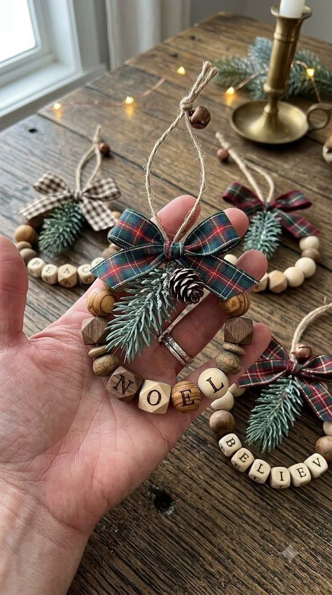
8. Personalized Bookmarks
Book lovers don't need another complicated gadget. Sometimes a beautiful bookmark is exactly right.
Cardstock, leather, fabric, or pressed flowers, with initials, a quote, a tiny illustration, or the recipient's name added, all work well as a base material.
Pairing the bookmark with a favorite book turns a small gift into an especially thoughtful one.
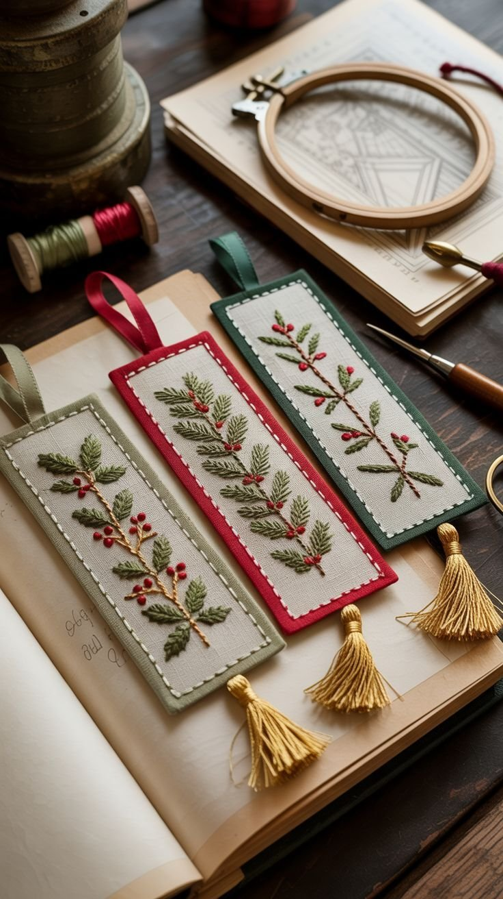
9. Homemade Chocolate Bark
Chocolate bark delivers maximum presentation for surprisingly little actual effort.
Melted chocolate spread onto a lined tray, topped with peppermint pieces, dried cranberries, nuts, coconut, or other festive ingredients, builds the whole gift.
Once set, breaking it into pieces and packaging it in a clear bag or decorative box finishes the presentation.
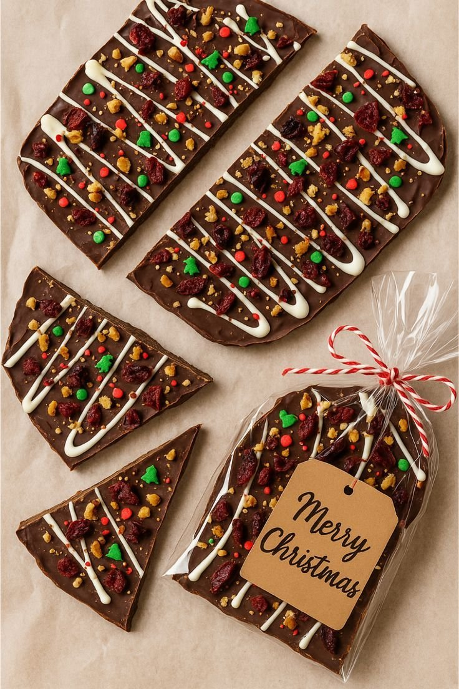
10. Painted Picture Frames
A basic wooden frame gets a genuine personal makeover with just a bit of paint.
Painting it in the recipient's favorite color, adding subtle Christmas details, or keeping the design minimalist all work well, with a meaningful photograph inserted before wrapping.
This gift suits siblings, parents, grandparents, and close friends particularly well.
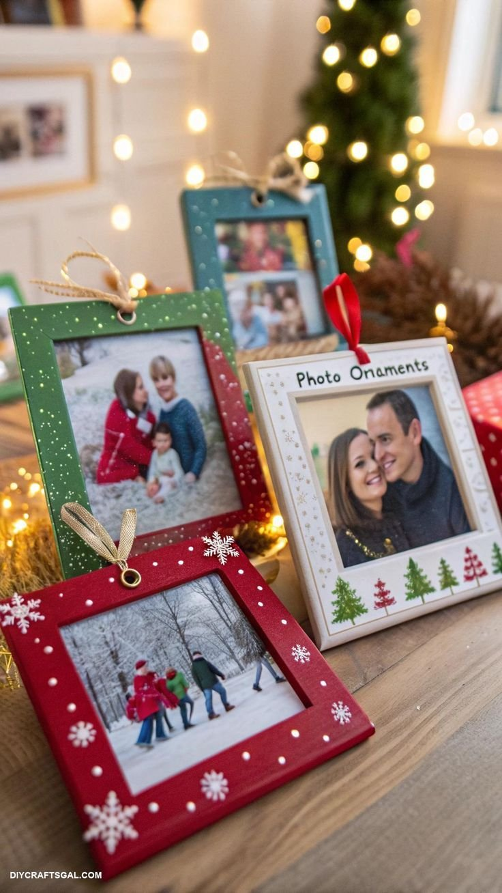
11. Homemade Christmas Spice Mix
A festive spice blend suits anyone who loves cooking.
Combining spices suited for roasted vegetables, cookies, hot drinks, or holiday baking, then packaging each blend in a small jar with suggested uses, builds a genuinely useful gift.
Separate versions can be made for bakers, coffee lovers, or people who lean toward savory cooking.
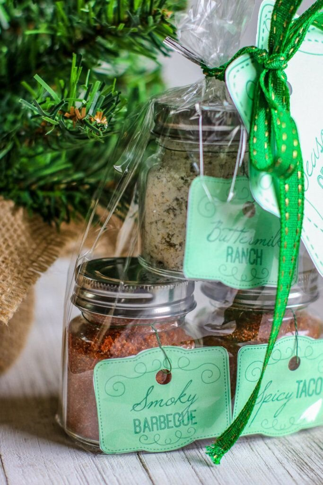
12. Personalized Tote Bags
Plain canvas tote bags give an easy blank canvas for a personal gift.
Initials, a favorite phrase, a simple illustration, or a small Christmas design, added with fabric paint or another suitable method, transforms a plain bag into something personal.
Filling the finished tote with a few small gifts turns it into a complete Christmas bundle rather than just a bag.
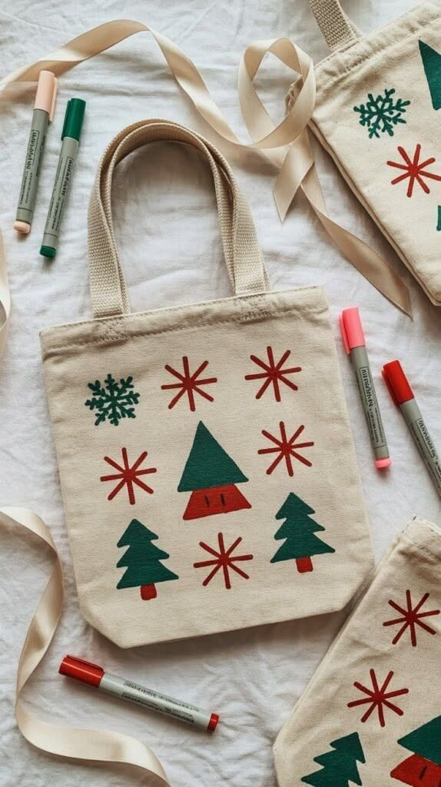
13. Handmade Christmas Wreath
A small wreath makes a beautiful gift for anyone who loves decorating.
A simple wreath base decorated with ribbon, greenery, dried oranges, pinecones, berries, or wooden ornaments builds the whole piece.
A smaller tabletop or bedroom version, rather than a full front-door wreath, often feels more personal and is easier for the recipient to actually display.
14. DIY Christmas Memory Jar
This might be one of the more sentimental ideas on the whole list.
Filling a jar with small handwritten notes describing favorite memories, funny moments, reasons to appreciate the person, or things hoped for next year builds a genuinely personal gift.
Twelve notes for the upcoming year, or twenty-five for Christmas itself, both work. It costs very little, but the emotional value tends to feel enormous.
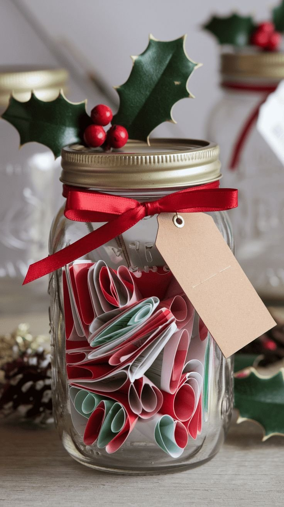
15. Homemade Granola
Granola makes a genuinely practical homemade gift, since it actually gets eaten rather than displayed.
Oats combined with nuts, dried fruit, and spices, baked according to a reliable recipe and cooled into an airtight jar, builds the whole gift.
A pretty label and ribbon make homemade granola look like something from a boutique food shop rather than a home kitchen.
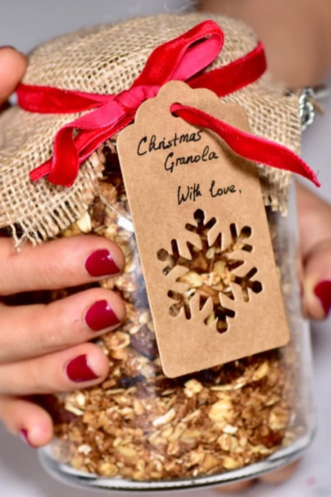
16. Personalized Embroidery Hoop Art
A simple embroidery hoop turns into personalized wall art with just a bit of stitching.
Initials, a short phrase, a Christmas tree, a house, or a simple botanical design all work well within the hoop's small frame.
Even basic embroidery skills are enough to create something genuinely personal without spending much money.
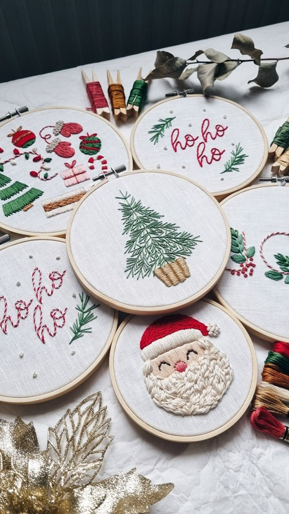
17. Homemade Vanilla Sugar
Vanilla sugar makes a lovely small gift for anyone who enjoys baking.
Sugar and suitable vanilla ingredients placed into a decorative jar, with a label explaining how to use it in cookies, cakes, or coffee, is the entire gift.
Packaging it with a wooden spoon and a handwritten recipe adds an easy, thoughtful Christmas touch.
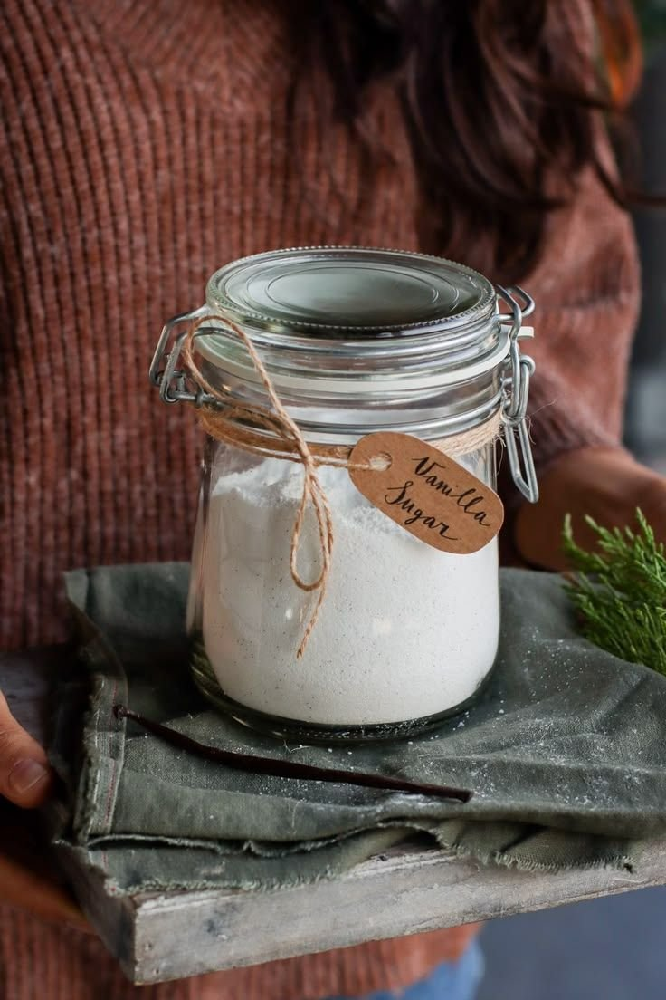
18. Handmade Recipe Book
This idea feels especially meaningful for parents and grandparents.
Collecting favorite family recipes, then writing or printing them into a small notebook with photographs, memories, cooking tips, and handwritten notes throughout, builds a genuinely personal keepsake.
Including recipes tied to specific Christmases or family gatherings pushes the sentimentality even further.
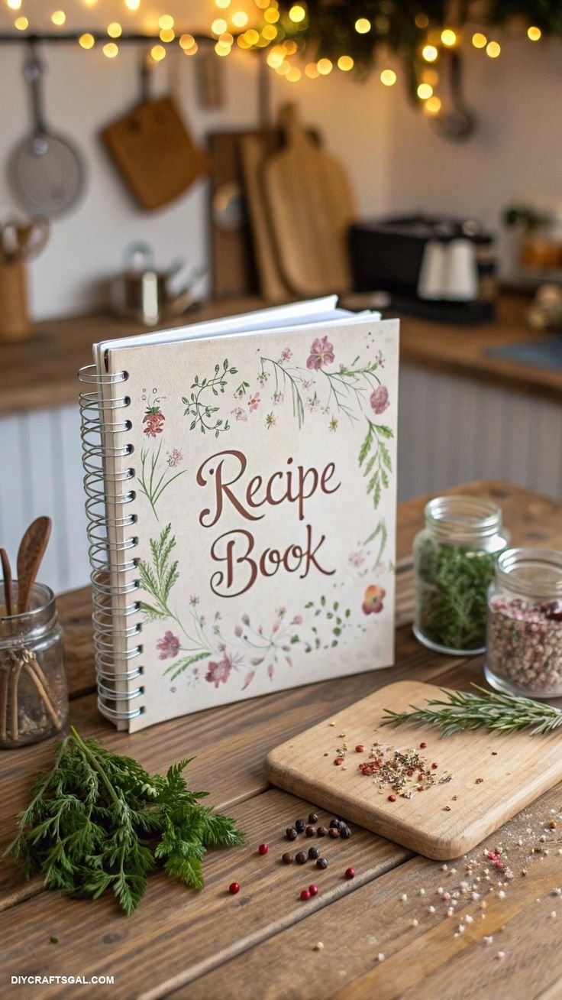
19. Painted Mugs
Plain ceramic mugs, personalized with simple designs, turn into a gift with real staying power.
A name, a tiny tree, stars, initials, or minimalist snowflakes tend to look more stylish than an elaborate painted Christmas scene.
Pairing the mug with tea bags, coffee, hot chocolate, or homemade cookies rounds out the gift.
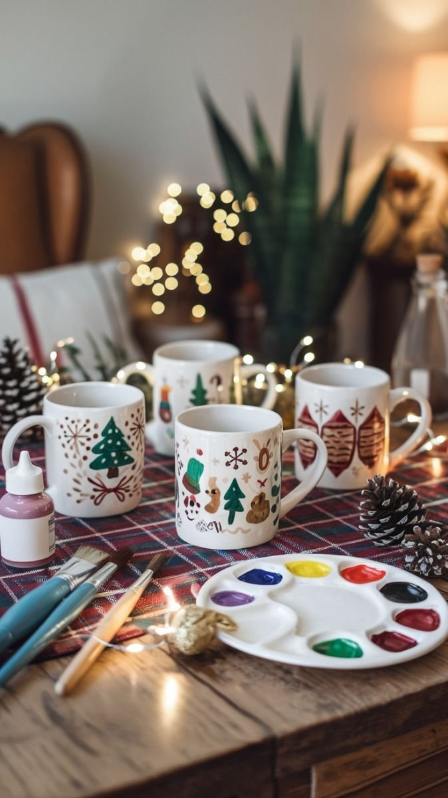
20. Homemade Sugar Scrub
A sugar scrub takes very little effort to make but reads as considerably more polished than that effort suggests.
Combining sugar with a skin-safe oil and fragrance, then packaging the mixture in a small jar with a wooden spoon or tiny scoop, covers the whole gift.
A peppermint, vanilla, or orange-inspired version suits the season well, just using ingredients appropriate for skin and clearly labeling anything that could trigger allergies matters here.
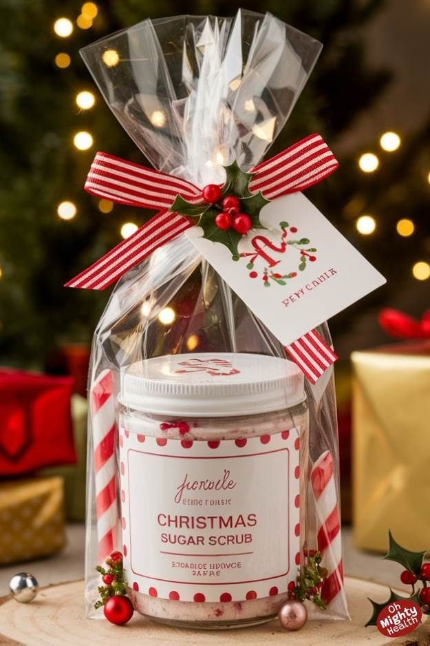
21. Scented Bath Salts
Bath salts look surprisingly luxurious once packaged well.
Mixing bath salt ingredients with a pleasant fragrance, then placing everything inside a small glass jar, builds the base gift; dried flowers or botanicals add visual interest where appropriate.
A simple label, something like "Christmas Relaxation Soak," finishes the gift without needing anything elaborate.
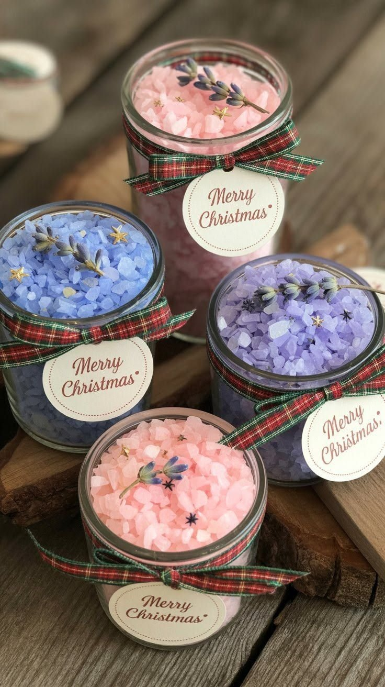
22. Personalized Photo Ornaments
Clear ornaments turn into tiny memory capsules with very little effort.
A favorite photograph, family picture, handwritten message, or small decorative element placed inside, with the person's name and the year added to the outside, builds a genuinely sentimental gift.
This idea works especially well for grandparents, since the ornament becomes part of their Christmas decorations rather than another item needing a place to be stored.
23. Homemade Cookie Mix
This idea works especially well when several affordable gifts are needed at once.
Layering dry cookie ingredients inside a glass jar, then attaching a recipe card explaining which wet ingredients to add, builds a gift that's as fun to look at as it is to bake.
Chocolate chips, oats, brown sugar, and colorful Christmas candies all layer well, and homemade food gifts remain popular precisely because both the recipe and presentation can be personalized.
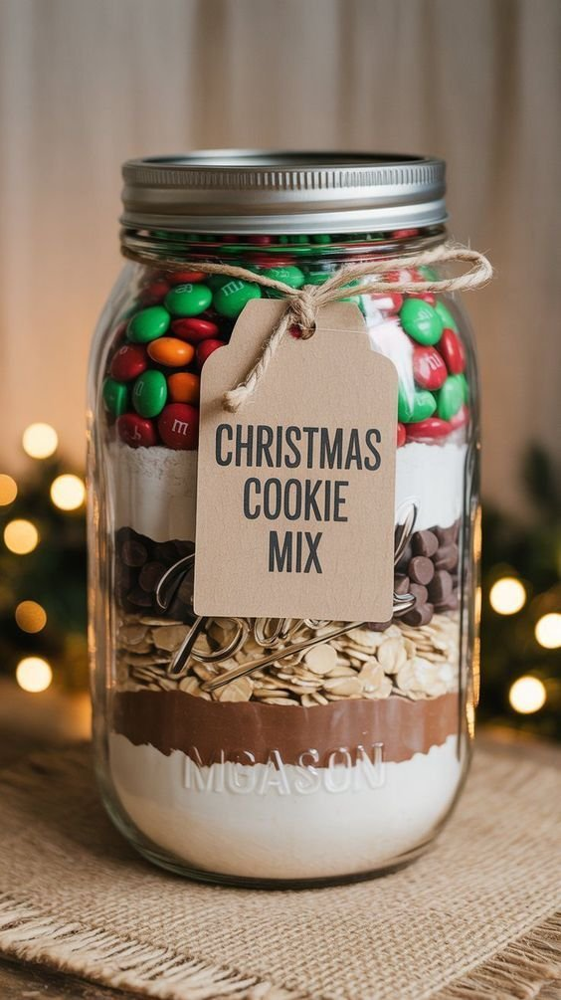
24. Hot Chocolate Jars
A jar filled with everything needed for a cozy cup of hot chocolate is hard to turn down.
Layering cocoa powder, sugar, mini marshmallows, chocolate chips, and crushed peppermint inside a clear jar, then finishing with ribbon and a small instruction card, builds the whole gift.
Different versions can be made for different people, peppermint chocolate for one, salted caramel for another.
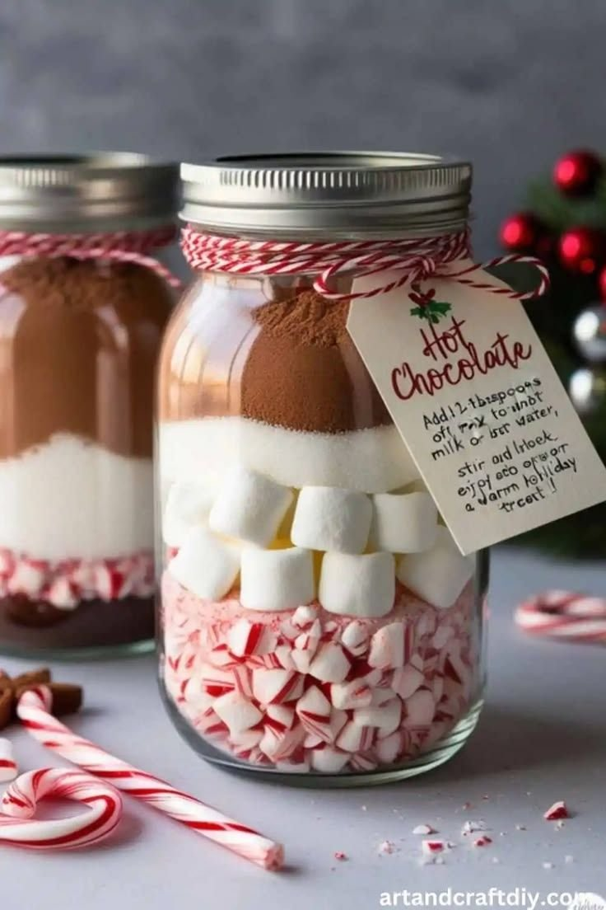
25. Personalized Candles
Homemade candles make genuinely good Christmas gifts, since nearly every element can be customized.
A simple glass jar, soy wax, a suitable wick, and a Christmas-inspired fragrance like vanilla, cinnamon, pine, orange, or peppermint cover the basics. A handwritten label with the recipient's name adds a personal touch.
Neutral jars with simple cream or kraft-paper labels tend to look considerably more expensive than they are, without requiring any complicated decoration.
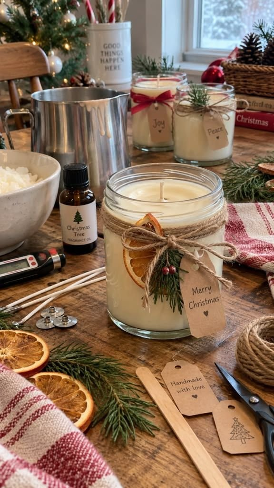
Final Thoughts
None of these twenty-five ideas require a studio's worth of supplies or years of craft experience. A jar, a label, and a bit of intention behind the choice of recipient usually matters more than technical polish.
The gifts people keep longest are rarely the most expensive ones, they're the ones that clearly took a little time, made with someone specific in mind.